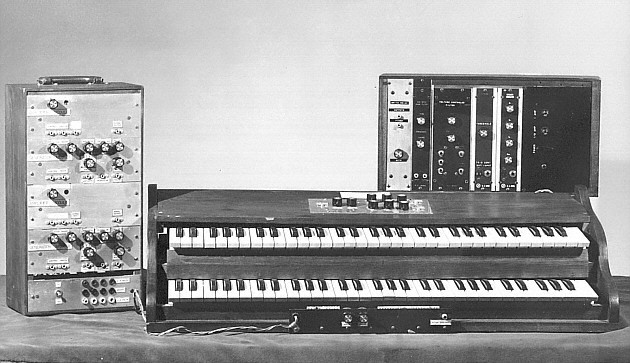
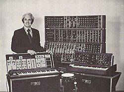

Moog synthesizer
- Engineered by Robert Moog in 1964/voltage-controlled analog synthesizer
Ever heard about the whimsicalness of this electronic musical instrument? Find out for yourself and read this page.

Definition / Description:
"A synthesizer (also synthesiser or synth) is an electronic musical instrument that generates audio signals." in other words, this synthesizer includes a collection of interconnected analog audio parts design to generate, shape, in control sound using voltage control.
What is a synthesizer?
When you first hear of a synthesizer, you might be surprised when it comes to what it can do. You may immediately picture some nerdy tech design, but it's much more than you may think. It's designed to turn audio signals into a sound by generating a waveform with three different methods. Subtractive synthesis, additive synthesis, and frequency modulation synthesis. This includes pitch Bend Wheel, not to mention automates repeating patterns in rhythmic sequences.So produce and depending on the waveforms it determines the pitch. So those voltages generate shapes and sounds rather than digital computers or samples.
[ADD]

Earlier systems were massive wall size cabinets where individual sound components like oscillators filters and amplifiers were connected manually using a patch cables. Setting up a wool size synthesizer typically took anywhere from 1:00 to 4 hours per patch. Well the system configured on entire song or live performance this could have taken several days or weeks because earlier systems practically lacked digital presets.
Patch memory
Patch memory on a synthesizer is the digital storage system that lets you save store and recall your custom sound settings so you don't however lose them when turning off the machine itself. How much storage does it have you ask? The first Moog synthesizer to Future Patch Memory storage offered 16 memory locations on board.
FUN FACT(S)
(1) The classical meaning of "to synthesize" is to assemble a whole out of parts Moog initially avoided the word, as it was associated with the RCA synthesizer, and instead described his invention as a "system" of "electronic music modules". After many debates, Moog eventually told the composer Reynold Weidenaar: "It's a synthesizer and that's what it does and we're just going to have to go with it." He used the word in print for the first time in 1966. By the 1970s, "synthesizer" had become the standard term for such instruments.
(2) It turns out the first official music then synthesizer was originally made for scientific research into the properties of sound and giving composers total electronic control over music pieces.
Sources
Moog synthesizer - Wikipedia
Moog synthesizer - History
Switched on bach - song
By: Lilly Holcomb